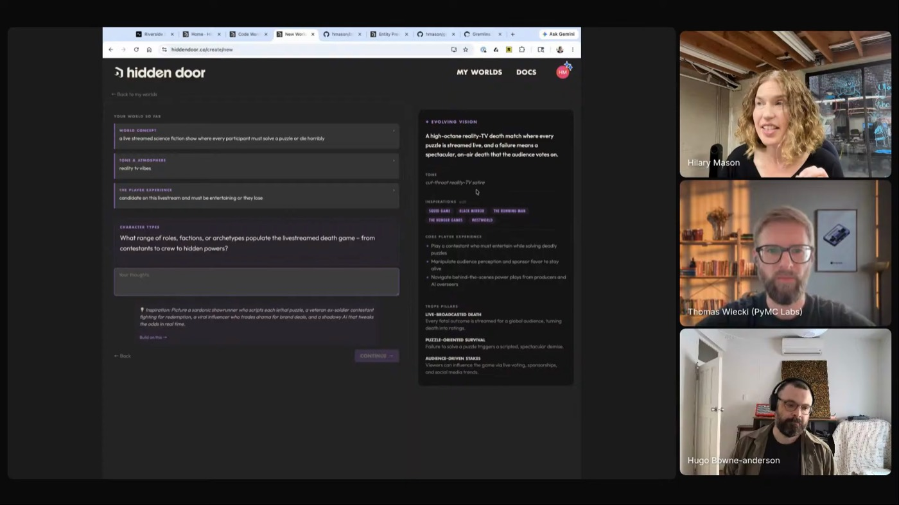

prompt-refinement
The interview-variations-evals loop as an invokable skill. The extracted version "lost a lot of its personality," so bring your own.
 HILARY MASON
HIDDEN DOOR
CREATIVE EVALS
WEEKLY GREMLINS
DATA & CHEESEBURGERS
HILARY MASON
HIDDEN DOOR
CREATIVE EVALS
WEEKLY GREMLINS
DATA & CHEESEBURGERS
Hilary runs creative work like an experimental lab: interview the person making the thing, run against frozen fixtures, generate three variations at different magnitudes of risk, score them with editorial evals. The loop keeps her taste in the center, not the model's.

"They're very mid. They are super biased, they're very same-sy." Hidden Door builds role-playing worlds, so average output is a product failure: a generic doctor prompt yields the same stereotypes every time. Her fix: "in order to get to great, you have to bring a lot of context. You have to be very sharp in what you actually want out of it."
The product is where the stakes live. Hidden Door turns an idea into a playable world: the world-builder keeps updating vision, tone, and inspirations while you answer questions, aiming for a strong reaction every time. And because stories need beats generic models refuse (their Crow-inspired world requires a murder), Hidden Door runs its own guardrails, "taking certain things out of the hands of the LLM."
The discipline behind it is the prompt-refinement skill, walked through step by step below. The eval never says "this is great"; it says whether the change helped.

"Make something to touch and develop an opinion about, where previously the making would've taken so long that it would never be worth it."
"What I want is to work on the weird stuff, all the bad ideas, all the stuff that nobody has the time for."
The interview-variations-evals loop as an invokable skill. The extracted version "lost a lot of its personality," so bring your own.
Three personas pull from the bad-ideas backlog, pitch and critique each other, and write design docs for moonshots no roadmap would schedule.
Her extracted version, runnable against your own codebase. One persona is Hilary, one is a perfectionist, one speaks for the player.
deepcopy, but you hear your data, techno renderer included. The repeated refrain exposed a real bug in Hidden Door's game-state representation.
"That is the kind of bullshit you can get up to when you've got 30 minutes between two meetings and a bad idea."